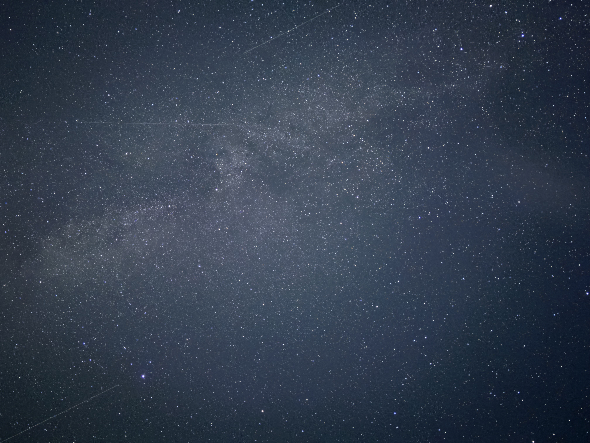

Экстренный репортаж
Операция
«Персеиды»:
ночное расследование.
Как безобидная поездка посмотреть на звёзды обернулась погоней, автокинотеатром, пледом и традиционным кофе на заправке.
Читать репортаж ↗Экстренный репортаж
Как безобидная поездка посмотреть на звёзды обернулась погоней, автокинотеатром, пледом и традиционным кофе на заправке.
Читать репортаж ↗
Фото: архив операции «Персеиды» делоСвежий выпуск
Цитата редакции
«Ничего особенного — тоже
может быть очень особенным».
— Ксюша, в разговоре с собой